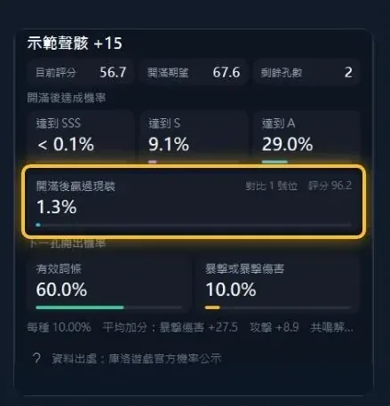
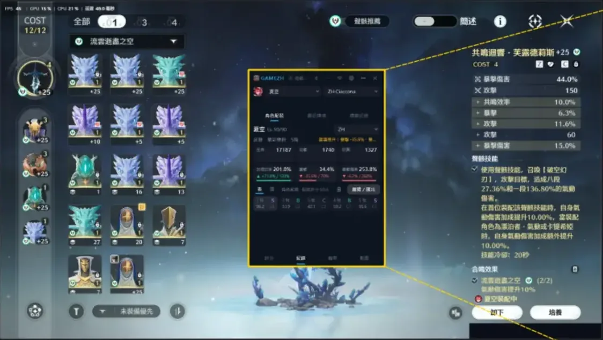
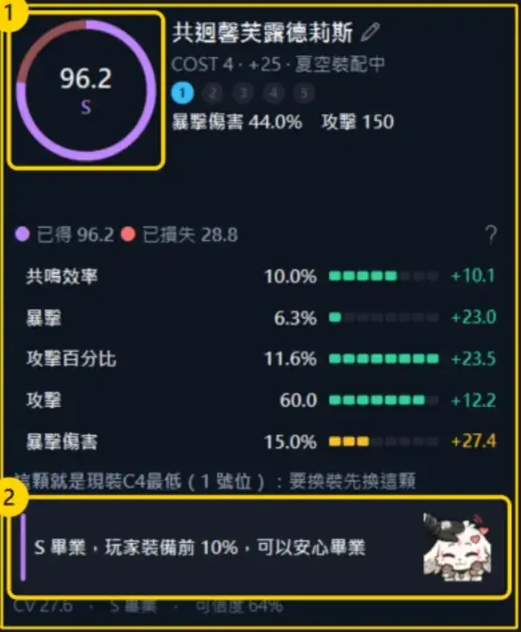
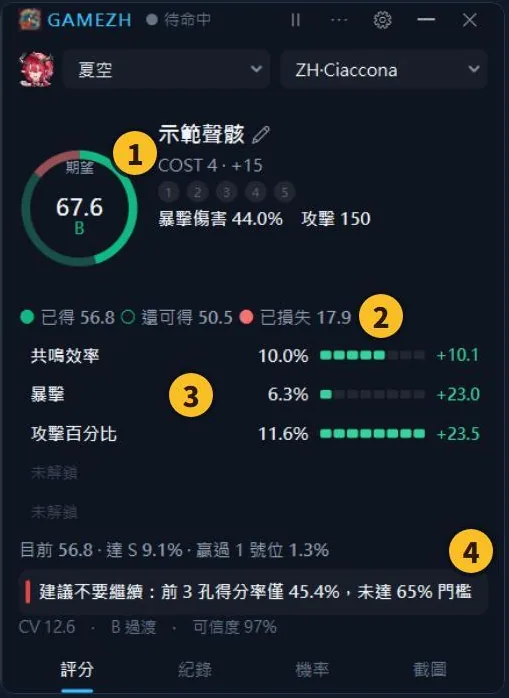
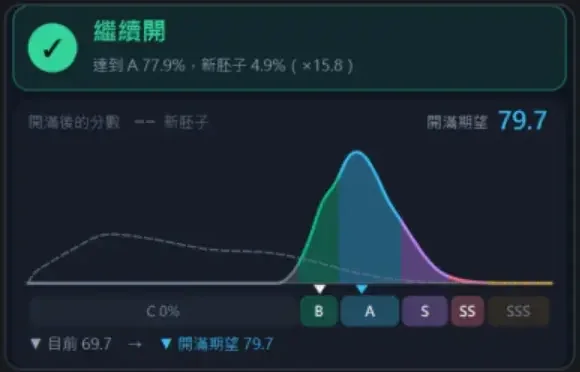
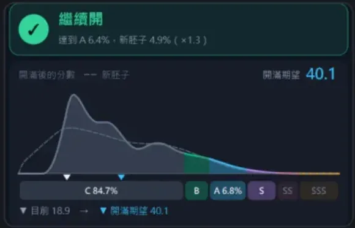
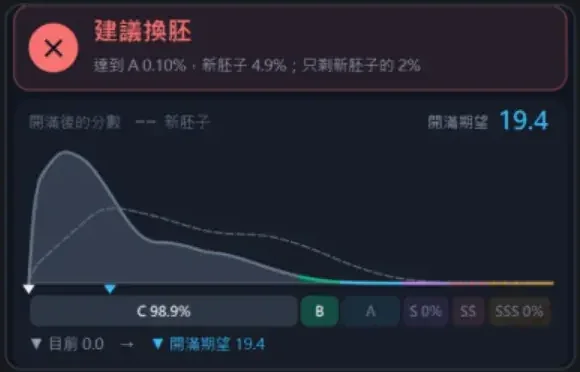
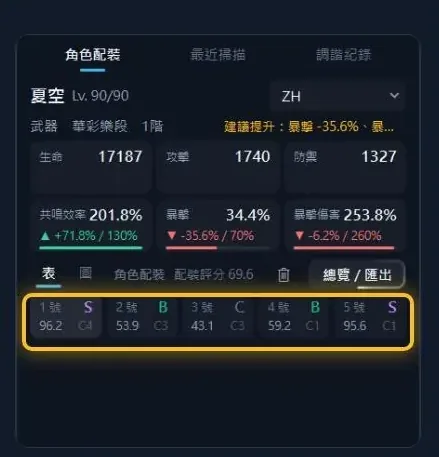
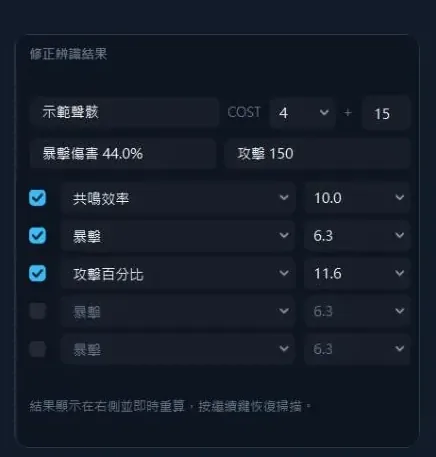
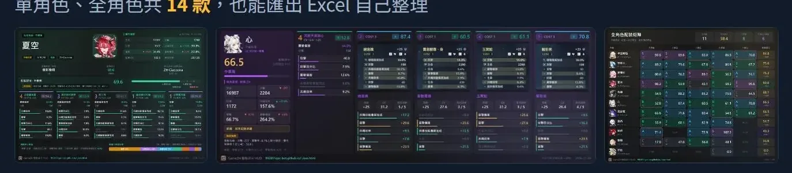

01開孔前先看機率
如果開滿也贏不過現裝，就先把資源留著。
刷聲骸不用再 Alt + Tab 切視窗算分數。開著遊戲點一下聲骸，評分、止損建議、開滿會落在哪，直接浮在畫面旁邊。


還沒開滿也能看。HUD 會把現在的分數、還能拿多少、已經虧掉多少，一次攤開給你。

▲ 開到 +15 的示範聲骸：期望 67.6，建議不要繼續（點圖放大）
GameZH 首創的開滿落點圖：每一孔都照官方公開機率計算，一張圖看出這顆胚子值不值得開。

▲ 目前 69.7 分，開滿期望 79.7，達到 A 的機率 77.9%



以下都是實際介面截圖。

如果開滿也贏不過現裝，就先把資源留著。

打開換裝比較，馬上知道差幾分，不用自己對數字。

紅色就是不夠。聲骸算得再細，最後還是要回到角色的總面板。

右下角是「卸下」的聲骸，才會存進配裝，整套練度一次看。

辨識不對就暫停手動改數值，評分即時更新。

單角色、全角色共 14 款分享圖，也能匯出 Excel 自己整理。練完直接丟群組分享。
從下載到看懂分數，大約五分鐘。
按「立即下載」，選一個下載方式：推薦 Microsoft Store，經微軟審核、之後會自動更新；也可以直接下載安裝檔；前兩個連不上再用 Google 雲端。
如果 Windows 跳出「Windows 已保護您的電腦」，按「其他資訊」→「仍要執行」。不想看到這個提示，可以改用 Microsoft Store 版本。
加入 ZHDC 社群，在任一頻道輸入 /授權碼，打開 HUD 貼上就登入完成，所有角色的評分權重都能直接用。
不想登入也可以按「訪客模式」，只是權重要自己設定。
先開鳴潮，再開 HUD。把評分小視窗拖到畫面左邊或中間偏左，不要擋到右邊的聲骸卡片。
在背包或培養畫面點一下聲骸，HUD 會馬上顯示：
還沒開滿的聲骸看「開滿落點圖」，曲線在右邊就放心開；要換聲骸時打開「換裝比較」，直接看差幾分；練完一隻角色，用「匯出分享圖」存起來。
錄影或直播前，到設定開「隱形模式」；遊戲變卡就把 OCR 優先權改成「省電」。
GameZH HUD 的運作方式和截圖、錄影、OBS 擷取畫面一樣，只看螢幕上看得到的畫面：不修改遊戲檔案、不讀寫遊戲記憶體、不注入程式、不攔截封包，也沒有自動點擊或巨集，所有操作都是你自己按。它不會替你玩遊戲，也不會改變遊戲裡的任何數值。詳細請看下方的安全性說明。
完全免費。授權碼也是免費到 Discord 領。
不一定。沒有授權碼可以用「訪客模式」，只是每個角色的評分權重要自己設定；有授權碼就能直接用社群整理好的權重。
出現「Windows 已保護您的電腦」時，按「其他資訊」→「仍要執行」。被防毒軟體隔離的話，可以改用 Microsoft Store 版本，或把安裝資料夾加入防毒的例外清單。
依序試試：① 確認小視窗沒有擋到右邊的聲骸卡片；② 在更多選單按「重新掃描」；③ 關掉 HUD，對程式按右鍵選「以系統管理員身分執行」再開一次。還是不行就到 Discord 回報，附上截圖。
按 HUD 上的暫停，手動把數值改正，評分會馬上重算。也歡迎截圖回報，我們會拿來改善辨識。
HUD 會讓遊戲優先使用電腦資源，畫面沒變化時也會自動休息。覺得卡的話，到設定把 OCR 優先權改成「省電」。
到設定開「隱形模式」，錄影和直播軟體就拍不到 HUD，自己還是看得到。
HUD 是電腦程式。手機版正在封閉測試，可以按「立即下載」→ 選手機選項留下 Email 申請；現在就想用的話，網頁版聲骸分析儀手機也能用，上傳角色資訊卡就能評分。
HUD 是「刷聲骸的當下」用：點一顆看一顆，告訴你要不要繼續開。網頁版分析儀是「角色練完」用：上傳角色資訊卡，整隻角色健檢、看排行。兩個可以搭配著用。
到 Discord 群組，或在首頁的回報問題直接寫。附上角色名稱和截圖會比較快找到問題。
就像開 Discord 懸浮窗或 OBS 擷取畫面一樣，透過畫面辨識文字，再把計算結果顯示在視窗上。遊戲照常跑，HUD 不碰遊戲本身的任何東西。
遊戲條款通常禁止的是：修改遊戲檔案或記憶體、注入程式、攔截或竄改封包、外掛與自動化操作（腳本、巨集）。GameZH HUD 從設計上就不做這些事，只做和截圖、錄影一樣的「看畫面」，所有遊戲操作都由玩家自己完成。
GameZH 是玩家自製的第三方工具，與庫洛遊戲無關，遊戲規範的最終解釋權屬於官方。我們會持續注意官方公告，如果規範有變動會第一時間調整工具並通知大家。
分數只是輔助，不是拿來比較誰比較強。我做這個工具的初心，一直都只是希望大家養聲骸的時候，可以少走一點冤枉路。
覺得哪裡算錯、哪裡不好用，直接告訴我是哪個角色、哪個地方，我會認真看。如果它有幫到你，留句話跟我說一聲，就是繼續做下去的動力。
看巴哈姆特完整介紹文 →
裝好、領授權碼，回遊戲點一下聲骸就能用。